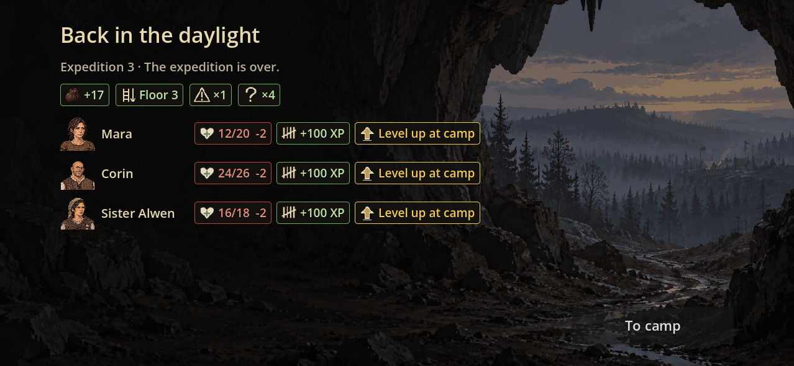
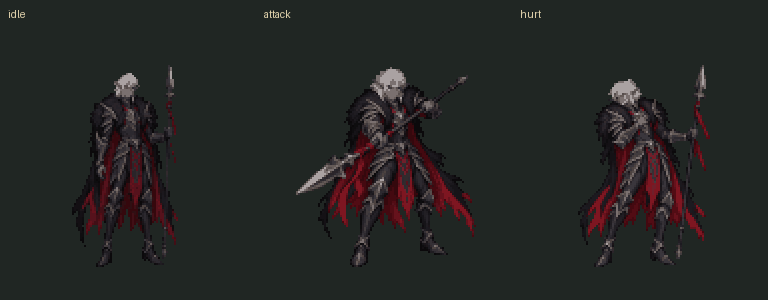
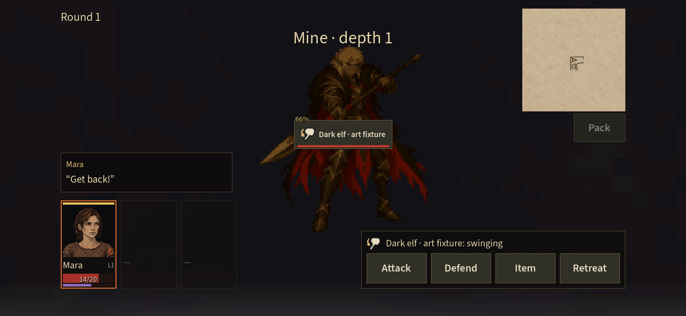

Depths · spoils and dark elf art
Actual Godot captures. Return and defeat share the same location; the gold pouch reuses the existing item design.

Phone views simulate landscape dimensions and safe-area margins. Physical-device review remains.
Independent unique rigs. Resting eyes and lips are separate components; every animation replaces the full feature. The small image below is the original resting reference.
Lighting follows PortraitView's authored upper-left presets; it is not a physical relighting model. Animation inspection is paused initially.
One dark elf spearman, idle / attack / hurt. Shared 128×128 canvas, 32-colour palette and foot pivot. These are artwork fixtures; no enemy rules or encounter assignments were added.


Eight-frame one-shot arrivals. Their first and last frames are empty. The game uses a plain fade when screen flashes are disabled.
Asset handoffActual held portrait framesActual lighting and playback capture